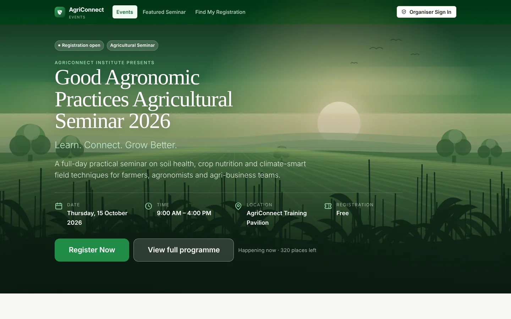
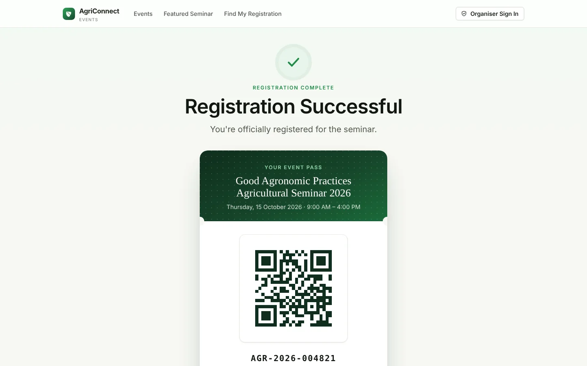
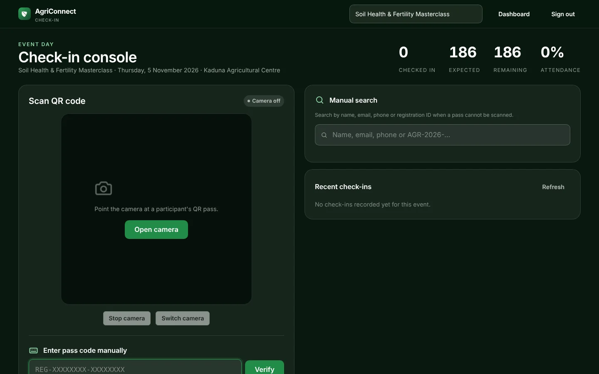
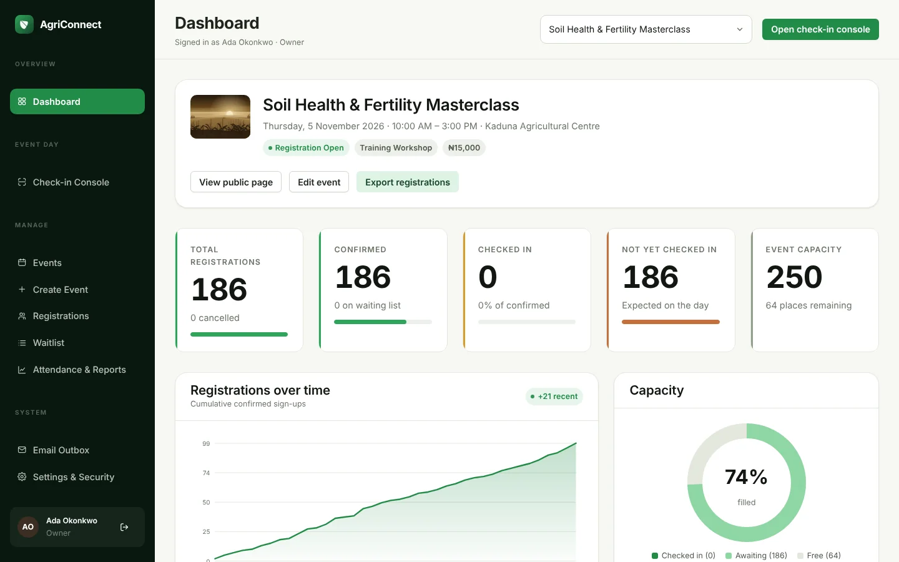

AgriConnect Events
A seminar registration and QR check-in platform: register once, get a unique QR pass, get scanned and checked in at the door.

The challenge
Agricultural seminars still run on paper lists at the door. Organisers needed a way to take registrations online, issue each attendee a pass, and check people in quickly on the day without exposing anyone's personal details.
My approach
The QR code carries only an opaque random token, never a name, email or phone number. Registration and attendance are kept separate: submitting the form makes someone registered, and only an authenticated staff member can check them in.
Process
- Built the public side: event page, registration form, a confirmation page with the QR pass, and a 'find my registration' lookup.
- Built the organiser console: dashboard, registrations table with filters and export, waiting list, attendance reports and a seven-step event wizard.
- Designed the check-in console for event day: camera scanning, manual search when a camera or phone fails, and a full-screen result for each outcome.
- Every scan answers five questions before anything is written: does the registration exist, is it for this event, is it cancelled, is it confirmed, has it already been used.
- Added role-based access (owner, organiser, check-in staff), an audit log, and a PHP 8 backend connected to the database Nathaniel Handan set up.
The solution
A working platform with a public registration site and a staff console. Scanning a pass shows one of five clear results: confirmed, already checked in, not found, cancelled or wrong event.
Results and lessons
The front-end build ships with an end-to-end Playwright test suite covering registration, duplicate prevention, all five check-in outcomes, waiting list, exports and role restrictions; all 55 checks pass.


